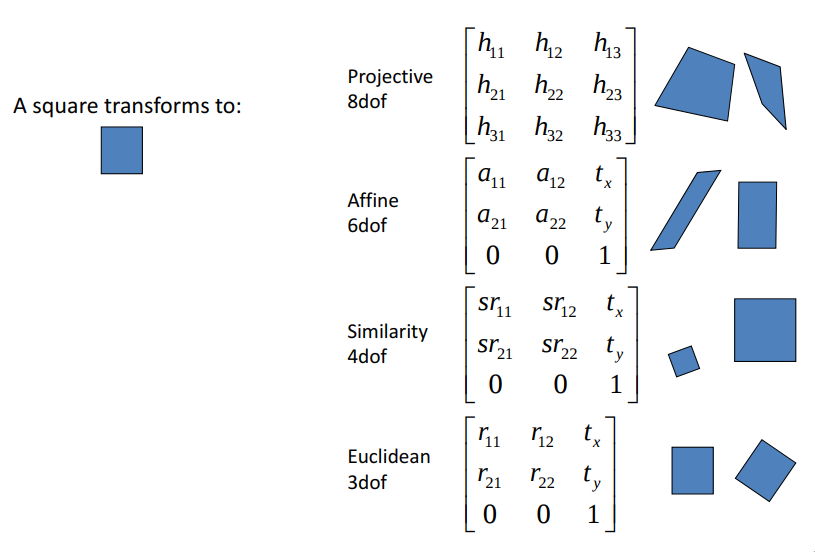

One of the crucial steps before learning any Machine Learning model is data preprocessing. Most of the time we just center the data and set variance to 1 (as this make the optimalization process easier). In case of Face-Recognition, we need one-more step: Face-Alignment. What is this all about? In brief, we want to facilitate the task for out model by making the position of face constant (most of the time it means that eyes, nose and mouth are roughly at same position for every image). This is a pretty common step for all known Face-Recognition algorithm. Commonly to other posts, we will ask the beginning question:
Which preprocessing method for Face-Recognition is best?
Reading this post you will find:
- Which Face-Alignment method is best? Should we even care about it?
- How many pad add around the face before feeding to image?
- Which Image transform should we use?
- Does quality of Facial Landmark really care?
- Does number and position of reference face landmark influence the accuracy?
- It is possible to learn a model for Face-Alignment?
Face-Alignment method
First of all, let's clarify what we need for preprocessing (most of the time):
- Detected face in image
- Face landmarks
- Reference landmarks points/pose of face
- Chosen type of transformation (ex. Similarity, Affine)
Let's assume that we have image with detected face using any provided algorithm (it does not influence the final accuracy of model, it may just make dataset bigger/smaller depending on number of detected faces in image, we use MTCNN). Then, we must decide if we want to make use of 2D alignment (most popular one) or 3D.
2D Alignment
At first, we will go step-by-step in 2D case. Firstly we need a face landmarks. There are many available algorithm for that task, which may return different number of such points, depending on training data annotations (there are even competiton for this task: Menpo Benchmark). The most popular numbers are 68 or 5. Why we may want to choose one set of points vs another? I all just depend on our reference points, which are the points of our base face position (so position of eyes,mouth etc.). We will try to make landmarks of each face as close to them as possible. How we can obtain/calculate such reference points? It is good question. We found a three ways of obtaining them:
- taking already known points, ex. from SphereFace paper
- find one base image with frontal face and take points from it
- calculate mean position of each point
Having reference points, next step is choosing the padding of of face, where we mean that there can be a tight or loosely crop of face (ex. containing hair, ears). Just look at example images and see that having the same reference point and different value of padding can result in different image. Also, you could have different value of padding in height and width direction (as most of faces are oval)
After this step, we have the last one: choosing the way of calculating transformation which will make landmarks from test images the most similar to reference points. Here we have 4 possible ways of doing it:
- Euclidean Transformation
- Similarity Transformation
- Affine Transformation
- Projective Transformation
The very good lecture about this transformation is from Augmented Vision Lab from University of Kaiserslautern. Let's also quickly clarify it here.
Euclidean Transformation
It is rigid transformation which preserve distance between each pair of points. The Euclidean transformations include rotations and translations (3DoF).
Similarity Transformation
In contrast to Euclidean, this transformation also include scaling, so it can make images smaller/bigger (so does not preserve distances between points, 4Dof)
Affine Transformation
Transformation which preserves points, straight lines and planes. Examples of affine transformations include translation, rotation, scaling, changing aspect ratio and shear mapping (6DoF).
Projective Transformation
It is the most advanced transformation, which in contrast to Affine does not preserve parallelism of lines. In contrast to other transformation, it create vanishing points and horizonts. As we look into transformation matrix we can notice that each parameter is independent (8DoF).

What is the visual difference between this transformation? Let's look into images. If we consider just MSE between reference points and projected points, the more degree of freedom we have then projection error is lower. In the other hand, the more degree of freedom we have, the more unnatural images look like. What is the more important, low MSE error or natural looking faces?
3D Alignment
So there are the steps for alignment of faces in 2D. 3D case in much less popular, but it was used one of the breakthourgh paper in Face Recognition, Deep Face. How the basic pipeline look here? In fact it depend on the algorithm because each of them have different pipeline. We are not the specialist at 3D Alignment as most of case it does not work better that 2D, most of time because of higher level of interpolation (like piecewise-affine transformation). Below images represent different approaches to 3D transformation.
 
Experiment based on 2D Alignment
Note: Compared to earlier experiments, we would have different the Baseline model, exactly we will replace linear layer after last module with Spatial Pooling (which is invariant to input size, always output the same size of features). We propose such idea because in next experiments we will have different input size (96x112 and 112x112). We could just increase the number of parameters in model but this could cause also increased overfitting then experiments would not be comparable. Worth noting that this model achieve slightly higher results at LFW but much lower at BLUFR protocol.
In first experiment we will compare multiple method of 2D alignment which differ with reference points and padding around the face. All method are open-source and used by Face-Recognition project which can be find at GitHub. Here are the tested methods:
- Basic: using MTCNN for points and SphereFace reference points. Use Similarity transformation.
- Crop: method taken from Facenet by David Sandberg, it just crop image with padding
- Dlib: using dlib method for Face-Aligment (get_face_chips) with 112 image size and 25% of padding (default value). This method use image-pyramid to make downsampling higher quality and 5 points (but different than SphereFace). Use Affine transformation.
- OpenFace-3points:using original OpenFace method for Face Alignment, which use 3 point as a reference. Use Affine transformation.
Look like the SpherFace method is best (we think it is one of the reason of high performance of their algorithm). But surprisingly the second one is just raw face-crop without any alignment. It is pretty intriguing that is worth to mention that FaceNet network from Google was also learn using raw images. Also recently there were several paper which claim that face-alignment is even harmful:
- Investigating Nuisance Factors in Face Recognition with DCNN Representation
- To Frontalize or Not To Frontalize: A Study of Face Pre-Processing Techniques and Their Impact on Recognition
We will look closer this statement, but compared to cited paper we will be comparing best Face-Alignment method vs Raw-Image.
Continuing the analysis of basic Face-Alignment method, we are not sure why Dlib method achieved so low results, maybe because of not including the upper part of head? The algorithm proposed in OpenFace is the weakest, it just contain to less details of face (as of the the creator of OpenFace code, we are really disappointed about that, in the other hand now we know what was one of the reason of poor performance).
As we analyse some basic method of Face-Alignment, now let's make more in-depth analysis of each component.
Which kind of Image Transformation should we choose?
Let's make a quick experiment of comparing the image transformation. We will exclude the Euclidean transform as without scaling we should have scale invariant reference points and we don't. In this experiment we will be using baseline reference points (from SphereFace project).
Look like that more natural images are better than fitting the reference points better. Even adding changing aspect ratio and shear make error slightly worse.
Does number of reference points matters?
As OpenFace provide 68 reference landmarks, we will use their software to make such test and check if more mean better. Also maybe some location of points are better than other. For testing is we choose following cases:
- 3 points: eyes + nose
- 3 points: eyes + center of mouth
- 7 points: eyes + nose + 2 points from mouth
- 68 points: all points detected in face
First two are defined at OpenFace. 7 points case was added as more complicated version, our imagination which points should be used (points are similar to references in SphereFace). The last case is just using all points. For each case we use Similarity Transformation.
The results are not surprise for us, but maybe there are for you? So, look like 7 points and 68 points case works best, overall much better than basic setting for OpenFace. Why? Look like when choosing the reference points there should be suitable variety of points location, in the other hand the transformation would be not consistent/incorrect for many faces. Just look at results of openface-3points-lip, which point have not usual location. In such case the transformation in calculated using only small region of image, what could cause calculating transformation which we are not wanting too. It's also interesting that having 7 or 68 points create similar results, we supposed that 68 should be worse as face-edge points are not always visible what should cause undefined behaviour. But look like Similarity transform works nice with both cases. However, we would choose 7-points case which should generalize better. In summary, the number of reference points may be not as crucial, even 7 (or 5 like in our basic method) works nice. The most important thing is using points which extend over a large face area.
How accuracy of face landmark location affect the model?
MTCNN algorithm was developed for Face-Detection and for Face-Landmark detection. As you may known, there also exist specialized method for just landmarks, which achieve higher accuracy. How does the more accurate landmark position affect final model? For this experiemnt we will use one of state-of-the-art models, DeepAlignmentNetwork created by Marek Kowalski. The idea behind their algorithm is much more complicated than MTCNN.
DAN is a multi-stage convolutional neural network for face alignment, where each stage analyzes the entire face image. This is facilitated thanks to the use of landmark heatmaps and feature images which transfers the information about the landmarks between stages. The use of an entire face image makes DAN very robust, which leads to state of the art accuracy on the most difficult datasets, including 72% reduction of failure rate on the 300W public test set.
Also DAN detect 68 points and unfortunately they don't overlap with MTCNN points. To be able to use same reference points, we estimate the position of needed points (center of eyes, nose and center of month) using other detected points. The final points look good at pictures, but we must be aware of the possibility of a mistake already at the beginning of our experiment. Here are the results.

Look like the DAN algorithm does not influence of the final performance of model, the both result look really similar (and difference maybe not statistically significant, we could check it by doing several experiments, not once). Even our estimation of points does not hurt the performance. Maybe we don't need these points at all and using just raw image? Let's discuss it next.
Is really Face-Alignment worth doing?
As stated in Investigating Nuisance Factors in Face Recognition with DCNN Representation, Face Recogniton may not need Face-Aligment at all. In this section I would like to repeat their experiments but using our network architecture and LFW/BLUFR for testing. The intuition tells us that this situation seems impossible. If it would, why so much effort would was put in to find a good method for Face-Alignment.
Our test will be very similar to presented is paper and basic alignment method would be presented by SphereFace. We will be testing different value of bounding-boxes around the face (parameterized by padding), like presented below. The size of input image from cropped faces is always 112x112. For aligned faces the longer side have value 112. Worth noting that mentioned paper used images 224x224.
Here are results from both experiments.
In contrast to cited paper, our experiments show the clear advantage of learning using faces after alignment in contrast to use raw faces. The different is >5%, so we think that Alignment is it worth doing.
Some paper like FaceNet or VGGFaceNet claim that when training with just cropped images, it is good idea to just align it for testing. But we are not sure how this image should look like as we do not have any reference points. We tried running SphereFace and Dlib alignment with different padding with no success. Our last try was just rotating the face so that eyes would be at one level without making any significant translation. However the results are not better than baseline. So we were not able to confirm that using aligned images for model learned on cropped faces boost the accuracy.
However, for us this is kind of phenomena that cropping is working so well, but why? Our first intuition is that could be treated as Data Augmentation technique, because the faces are rotated relative to the center of the picture with different values. We will add rotation to our sets of Data Augmentation technique, which will be tested in next post.
We would like also discuss a additional phenomena: both 3 middle experiments in their group achieve similar accuracy despite having different padding value. It just only show that network can distinguish between useful (foreground) and superfluous (background) information, what create some kind of attention, nice! Let's make the test by taking the feature map from one of convolutional module and visualize it. Our visualization will be not as nice as others because most of blogs/paper use last layer to show per class attention. We are just want to show the focus of entire network before making any classification (so in fact where the features which describe the person come from). The displayed value is exactly mean absolute value. Let's hope they would look nice! Many test with different configuration of padding will be taken. Enough talking, network, show what you have inside! (As you may notice, the more pink the color is, the higher value of features is)
Above images look intriguing, don't they? Look like some of network have higher values in face-region, other not. Also network learned with aligned faces have overall more pinky images. But whether it adds anything to interpretation of network? Our answer is clear: besides it is nice, nothing special. As we are visualizing only just intermediate features, this state where network focus their attention. But you must be aware that this values are not normalized, so visualization show only peak values, in fact the attention map could be much bigger. Also why the Attention Map from some network with very high score doesn't look great? If you want to get better intuition about visualizing the feature maps we advice lecture from fast.ai part 1: 7—EXOTIC CNN ARCHITECTURES; RNN FROM SCRATCH.
How about letting the network to align the image?
As we let the network to learn which features are crucial for Face-Recognition, maybe we also let it to preprocess the images? Sound great, but how come? Just use Spatial Transformer Layer! It enable to apply the image transformation based on features extracted from image, so no need for face landmarks.

As presented at above images, it contain:
- Localication network: used for generating 6 parameters needed for image transformation
- Grid generator: use provided 6 parameters to generate transformation grid
- Sampler: used input image and grid output modified image
If you would like to get more intuition about STN, read a introduction blog about it from kevinzakk, we really recommed it!.
This approach is not novel at Face-Recognition community, we know 3 papers already use this approach:
- Learning a Metric Embedding for Face Recognition using the Multibatch Method
- Towards End-to-End Face Recognition through Alignment Learning
- End-To-End Face Detection and Recognition
Each of mentioned paper use STN in different way. The first paper use similarity transform and pretrain the model using landmark annotationthen it is finetuned with recognition part. The second one want to compare different type of transformation (like we did earlier in the post) but using learnable STN. The last one use STN also face-detector.
Our approach would be the most similar to the paper Towards End-to-End Face Recognition through Alignment Learning (despite using CenterLoss), but we will also try pretraining STN model.
Out input data is cropped images with some of the paddding with final size 150x150. The network architecture is 3 layer Convolutional with Pooling as a first component (which behave as a downsampler here). The input size to network is 112x96 (like in baseline experiment). This is all we need here, let's make experiments!
Pretrained STN
First experiments will just show if STN are able to learn transformation similar to our baseline and if we could easily boost accuracy by finetunning it.
From all pretraining experiments the best results achieved method, where STN is pretrained and then frozen during training connected with the baseline FaceResNet model. The results as against baseline are comparable beyond the validation loss and validation accuracy, where STN model archive much higher values. In other cases when STN model is finetuned or even FaceResNet is learned from scratch, the results are much lower than the baseline. Concluding this part, it is not worth to use pretrained STN model in any configuration as final result in best case are same like the baseline.
Types of transformation in STN
These experiments were testing basic type of transformation which can be learned using STN. What are the results? The best method (affine transformation) does achieve similar performance like the best current method taken from SpherFace paper. We were really surprised by this results! This indicate that STN really can learn useful transformation. Let's also look at how this image transformation look like, how different they are compared to baseline.
STN transformation are similar to each other and different from presented in SphereFace paper. This indicate that there are many ways of Face-Alignment to get high accuracy of model.
More STN experiments
Intrigued by high performance of STN we conduct some more experiments. We were adding more parameters or DropOut to Localization Network. Also original baseline FaceResNet (without AvgPool model was tested).
It look like that adding more parameters to model make STN better in context of Validation Loss. However LFW and BLUFR are going in opposite direction because the results are getting worse. Also the original baseline FaceResNet model does not get any boost of performance in LFW and BLUFR despite having the competitive Validation Loss.
In summary, look like STN can provide very competitive results, especially with data distribution seen during training. Notwithstanding it is not clear why the same improvement is not seen at LFW and BLUFR benchmarks (for example models with same Validation Loss like STN model get much better results). Our intuition say that it may be caused by overfitting STN model to some face distribution then applying same transform for different distribution does not provide as huge boost. If this would be true, when more model regularization method should be used (Towards End-to-End Face Recognition through Alignment Learning use CenterLoss as a additional regularization, maybe this is a clue for a better performance?). We will for sure get back to this method.
3D Face Alignment
In the last experiments we would like to conduct experiments with the most advanced technique for Face Alignment, 3D models. However, the 3D pipeline is much more complicated with different training and testing methodology. Authors of most advanced method FacePoseNet: Making a Case for Landmark-Free Face Alignment were able to dispel our doubts about the pipeline the state-of-the-art method of 3D face modeling (see the comments). We need to read all the three paper carefully then maybe we will be able to create the FacePoseNet pipeline.
However, we run just experiments with different, much simpler method of 3D modeling, descibed in Effective Face Frontalization in Unconstrained Images. The results does not convince us to make any further efforts in this direction as many of images doesn't work well (especially with rotated faces).
Conclusion
It this post we have analysed a lot of ways of preparing Face image before using any Deep Learning model. Unfortunately none of method was able to detronize method proposed in SphereFace. Let's first answer our question asked at the beginning:
- Which Face-Alignment method is best? Should we even care about it?
- the best method is proposed by creators of
SphereFace(code example)
- the best method is proposed by creators of
- How many pad add around the face before feeding to image?
- in case of
SphereFacemethod, between 0 and 20
- in case of
- Which Image transform should we use?
Similarity Transformationprovide best results
- Does quality of Facial Landmark really care?
- when you have only use
5of them, it does not significantly influence the final results
- when you have only use
- Does number and position of reference face landmark influence the accuracy?
- choosing the both number and position of reference points is crucial for model accuracy
- It is possible to learn a model for Face-Alignment?
STNshow that it is possible with results only worse thatSphereFace
There are also some extra positives sides of experiments as we can now give some recommendation for others researcher:
- When you are trying to create own
Face Alignmentalgorithm always make sure that is surpass single image cropping (which is surprisingly hard baseline to beat). - The position of reference
Face Landmarkand amount ofpaddingaround the face is crucial forFace Alignmenttask.
That is all in this post, we hope that there were interesting experiments for you. Next time we will test a Data Augmentation technique and their relation to Face Recognition task.
References
Papers
- SphereFace : Deep Hypersphere Embedding for Face Recognition
- Joint Face Detection and Alignment using Multi-task Cascaded Convolutional Networks
- Menpo Benchmark
- DeepFace: Closing the Gap to Human-Level Performance in Face Verification
- FaceNet
- Spatial Pooling
- Investigating Nuisance Factors in Face Recognition with DCNN Representation
- To Frontalize or Not To Frontalize: A Study of Face Pre-Processing Techniques and Their Impact on Recognition
- Deep Alignment Network: A convolutional neural network for robust face alignment
- Deep Face Recognition
- Spatial Transformer Layer
- Learning a Metric Embedding for Face Recognition using the Multibatch Method
- Towards End-to-End Face Recognition through Alignment Learning
- End-To-End Face Detection and Recognition
- FacePoseNet: Making a Case for Landmark-Free Face Alignment
- Effective Face Frontalization in Unconstrained Images